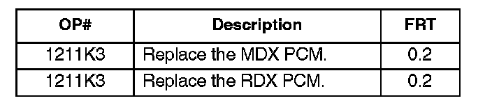

Engine Controls - MIL ON/DTC P0962/963/966/967/970/971
09-029June 30, 2009
Applies To:
2007-08 MDX - ALL
2007-08 RDX - ALL
MIL Comes On With DTC P0962, P0963, P0966, P0967, P0970 or P0971
SYMPTOM
The MIL is on with one or more of these DTCs:
^ P0962 (problem in A/T clutch pressure control solenoid valve A circuit)
^ P0963 (problem in A/T clutch pressure control solenoid valve A)
^ P0966 (problem in A/T clutch pressure control solenoid valve B circuit)
^ P0967 (problem in A/T clutch pressure control solenoid valve B)
^ P0970 (problem in A/T clutch pressure control solenoid valve C circuit)
^ P0971 (problem in A/T clutch pressure control solenoid valve C)
PROBABLE CAUSE
The PCM has an internal failure.
CORRECTIVE ACTION
Replace the PCM.
PARTS INFORMATION
ECM/PCM Control Module:
2007 MDX
P/N 37820-RYE-A58
2008 MDX-
P/N 37820-RYE-A62
2007-08 RDX-
P/N 37820-RWC-A57
WARRANTY CLAIM INFORMATION

In warranty:
The normal warranty applies.
Failed Part: P/N 37820-RYE-A57
Defect Code: 03214
Symptom Code: 03203
Skill Level: Repair Technician
Out of warranty:
Any repair performed after warranty expiration may be eligible for goodwill consideration by the District Parts and Service Manager or your Zone Office. You must request consideration, and get a decision, before starting work.
DIAGNOSIS
Connect the HDS to the vehicle's DLC, and check for DTCs.
Is DTC P0962, P0963, P0966, P0967, P0970, or P0971 indicated?
YES - Go to REPAIR PROCEDURE. NO - This service bulletin does not apply. Continue with normal troubleshooting.
REPAIR PROCEDURE Replace the PCM:
^ Refer to section 11 of the appropriate service manual, or
^ Online, enter keywords PCM REPLACE, and select PCM Replacement from the list.

Disclaimer